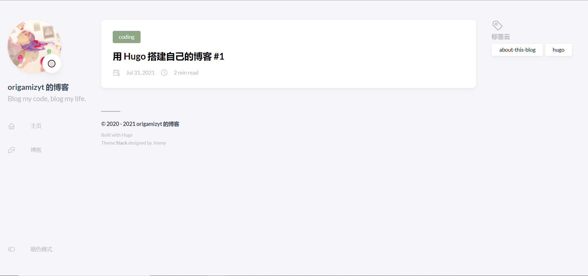

什么是 Hugo
Hugo 是一个快速和现代的静态网站生成器，使用 Go 写成，旨在使网站创建再次有趣。– Hugo 官网
简而言之，Hugo 就是把 markdown 文件转化为 html 文件的工具，用 Go 语言写成，并且能够适配各种主题， 支持博客论坛的框架。Hugo 可以快速 deploy 到各大主机供应商，节省无谓操作的时间。
安装 Hugo
我的系统是 Windows-10-10.0.19041-SP0，使用 Chocolatey 安装 hugo:
$ choco install hugo-extended -confirm
注：你也可以安装 hugo，但这将导致一些主题不可用。
如果你使用 macOS 或 Linux，也许你可以使用 MacPorts、Debian、apt-get 或 RPM 等包管理器安装。
当然，你也可以从源代码使用 Go 构建工具编译。运行 hugo version 命令以验证安装：
$ hugo version
hugo v0.86.1-F6821B88+extended windows/amd64 BuildDate=2021-07-30T10:13:35Z VendorInfo=gohugoio
创建博客
新建网站
使用 hugo new site 命令创建网站。这将为你新建一个目录。
$ hugo new site my-blog
...
$ cd my-blog
添加主题
现在，你需要为你的博客添加一个主题。在 themes.gohugo.io 上，你可以浏览不同同种类的主题。本博客使用了 Stack 主题。第一步，你需要克隆主题的代码库到 themes 目录下：
$ git clone https://hub.fastgit.org/CaiJimmy/hugo-theme-stack.git themes/hugo-theme-stack
注：在国内 FastGit 镜像速度更快。
对于一般的主题，只需在根目录的 config.toml 文件中做如下配置：
theme = "my-custom-theme" # 替换为你的主题
对于一些特殊的主题（如 Stack）则需按官方步骤进行操作。要使用 Stack 主题，需要将 themes/hugo-theme-stack/exampleSite/config.yaml 中的内容复制到 config.toml 中，我使用 Python 进行了一小步转换。
>>> import yaml, toml
>>> yaml_content = open(r'themes\hugo-theme-stack\exampleSite\config.yaml').read()
>>> data = yaml.load(yaml_content)
>>> open('config.toml', 'w').write(toml.dumps(data))
配置 config.toml
打开 config.toml 文件，接下来将会对其进行必要的修改。
baseurl
baseurl 是应用程序挂载的 URL，暂时将其修改为 http://localhost:1313。
languageCode
languageCode 指你所使用的语言代码，英语为 en-us，中文 zh-cn。
title
修改 title 为你的博客标题，它将会出现在左侧侧边栏以及网页标题中。
接下来是一些 Stack 特有属性。
params.sidebar (Stack)
将其中的 subtitle 改为你想要的副标题。
params.mainSection (Stack)
将 MainSections 设置为你想要在首页上显示的模块。我将其设置为 Posts，以显示文章模块。
[params]
mainSections = ["posts"]
params.sidebar.avatar (Stack)
把你的头像放到 static 文件夹里，然后修改配置如下：
[params.sidebar.avatar]
enabled = true
local = false
src = "/avatar.jpg" # 改为图片名
menu.main (Stack)
menu.main 是一个数组，代表侧边栏菜单项，将其改为：
[[menu.main]]
identifier = "home"
name = "主页"
url = "/"
weight = -100
pre = "home"
[[menu.main]]
identifier = "posts"
name = "博客"
url = "/posts"
weight = -100
pre = "messages"
第一个博文
创建文章
使用 hugo new 命令创建文章，文章为 Markdown 格式，以 .md 结尾。
$ hugo new posts/first-blog.md
.../my-blog/content/posts/first-blog.md created
正常情况下，first-blog.md 应包含如下内容：
---
title: First Blog
date: 2021-07-31T23:16:13+08:00
draft: true
---
修改 Front Matters
个人来讲，我比较喜欢 toml 格式的 Front Matters，所以我把它改写成了 toml：
+++
title = "First Blog"
date = 2021-07-31T23:16:13+08:00
draft = true
+++
改一下标题，取消 Draft，加入一些 Tag 和 Category：
+++
title = "用 Hugo 搭建自己的博客 #1"
date = 2021-07-31T23:16:13+08:00
draft = false
tags = ["hugo", "about-this-blog"]
categories = ["coding"]
+++
在三个加号的下方加入一些内容：
# Hello, Hugo!
## *Welcome* to my **hugo** blog!
完成！
本地浏览
运行 hugo server 来启动 Hugo 服务器：
$ hugo server
...
Web Server is available at http://localhost:1313/ (bind address 127.0.0.1)
Press Ctrl+C to stop
访问 http://localhost:1313 来看看你的新博客！（我的博客长这样）

还不错吧！